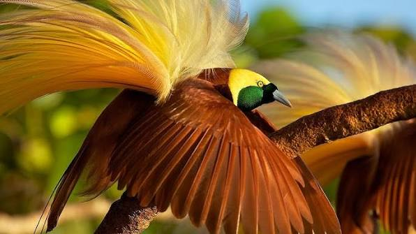
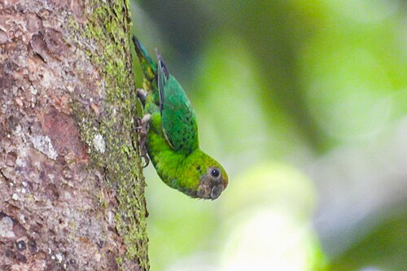
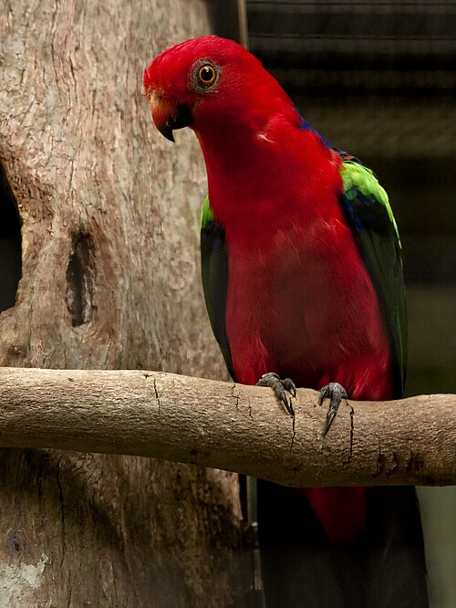

The beautiful Birds of Papua New Guinea
The Greater Bird of Paradise

- The greater bird of paradise are a group of birds known for their extraordinary plumage and elaborate courtship displays.
They are native to Papua New Guinea and surrounding islands, and they play a significant role in the cultural heritage of the region.
Yellow-capped pygamy parrot

- The yellow-capped pygmy parrot (Micropsitta keiensis) is a species of parrot in the family Psittacidae mainly found throughout western New Guinea.
Its natural habitats are subtropical or tropical moist lowland forest, subtropical or tropical mangrove forests, and subtropical or tropical moist montane forest. Like many parrots, this pygmy parrot is affectionate to its mate. It is currently unknown if they remain monogamous for life like many bigger parrots because of their isolated location, which is difficult to reach.
Papuan king parrot

- The Papuan king parrot (Alisterus scapularis) is a species of parrot in the family Psittacidae found in Papua New Guinea.
It is a medium-sized parrot with a distinctive red and blue plumage.
This species is known for its intelligence and ability to mimic human speech.